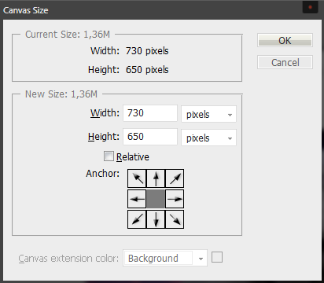
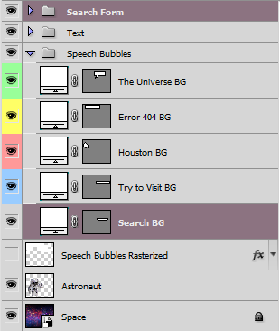

Thank you for purchasing my theme. If you have any questions that are beyond the scope of this help file, please feel free to email via my user page contact form here. Thanks so much!
This is one column simple and aesthetic layout inspired by space and quantum mechanics. All text is editable so it is possible to use your custom text and / or change purpose of this template from Error 404 subject to i.e. another common HTTP error, like 401, 403, 500 or 503.
This template uses Georgia and free Google web font - Banger. All text in this page you can easily change in this area:
<div id="text_1">Houston,<br />we have a<br />problem!</div> <div id="text_2">Error 404!</div> <div id="text_3">The universe<br />you are looking for<br />doesn't exist</div> <div id="text_4">Try to visit another dimension</div> <div id="text_5"> <ul> <li><a href="#">Home</a></li> <li><a href="#">About</a></li> <li><a href="#">Services</a></li> <li><a href="#">Blog</a></li> <li><a href="#">Portfolio</a></li> </ul> </div>
If you would like to edit links, find this lines:
<div id="text_5"> <ul> <li><a href="#">Home</a></li> <li><a href="#">About</a></li> <li><a href="#">Services</a></li> <li><a href="#">Blog</a></li> <li><a href="#">Portfolio</a></li> </ul> </div>
And change every # into working link, e.g.:
<div id="text_5"> <ul> <li><a href="http://yourdomain.com">Home</a></li> <li><a href="http://yourdomain.com/about">About</a></li> <li><a href="http://yourdomain.com/services">Services</a></li> <li><a href="http://yourdomain.com/blog">Blog</a></li> <li><a href="http://yourdomain.com/portfolio ">Portfolio</a></li> </ul> </div>
You can edit search form here:
<div class="search_box">
<form id="searchform" action="" method="get">
<input id="s" class="inputField" type="text" name="s" onblur="if (this.value == '') {this.value = 'Or search for new one...';}" onfocus="if (this.value == 'Or search for new one...') {this.value = '';}" value="Or search for new one..." />
<input id="searchsubmit" class="btn-search" type="submit" value="" />
</form>
</div>
padding-right: 10px; padding-right: 10px; padding-right: 10px; which controls appearance of every t which controls appearance of every t which controls appearance of every t which controls appearance of which controls appearance of I'm using two CSS files in this theme. The first one is a generic reset file. Many browser interpret the default behavior of html elements differently. By using a general reset CSS file, we can work round this. This file also contains some general styling, such as anchor tag colors, font-sizes, etc. Keep in mind, that these values might be overridden somewhere else in the file.
The second file contains all of the specific stylings for the page. The file is separated into 3 sections. First one is Content - responsible for animated astronaut and background:
/* Content */
#stage {
top: 0px;
left: 0px;
z-index: 100;
}
.stage {
position: absolute;
top: 0;
left: 0;
width: 100%;
height: 100%;
overflow: hidden;
}
#astronaut {
width: 730px;
height: 650px;
background: transparent url(../images/astronaut.png) no-repeat;
position: relative;
margin-left: 50px;
top: 20%;
}
#space {
background: transparent url(../images/space.jpg) repeat-x 0 0 fixed;
-webkit-background-size: cover;
-moz-background-size: cover;
-o-background-size: cover;
background-size: cover;
}
Second one is Text which controls appearance of every text in speech ballons:
/* Text */
#text_1 {
font-family: 'Bangers', cursive;
font-size: 30px;
color: #393939;
line-height: 28px;
position: absolute;
top: 102px;
left: 32px;
}
#text_2 {
font-family: 'Bangers', cursive;
font-size: 90px;
color: #2d2d2d;
padding-right: 10px;
position: absolute;
top: 10px;
left: 95px;
}
#text_3 {
font-family: 'Bangers', cursive;
font-size: 40px;
color: #393939;
line-height: 32px;
text-align: right;
padding-right: 10px;
position: absolute;
top: 73px;
left: 345px;
}
#text_4 {
font-family: Georgia, 'Times New Roman', Times, serif;
font-size: 18px;
color: #4c4c4c;
text-transform: uppercase;
font-style: italic;
position: absolute;
top: 176px;
left: 392px;
}
#text_5 {
font-family: Georgia, 'Times New Roman', Times, serif;
font-size: 12px;
text-transform: uppercase;
position: absolute;
top: 194px;
left: 392px;
}
And last one is Search which controls appearance of search form:
/* Search */
.search_box {
width: 286px;
height: 34px;
border: none;
position: absolute;
top: 224px;
left: 430px;
}
.inputField {
background: transparent url("../images/search_bg.png") no-repeat 0 0 scroll;
border: none;
color: #959595;
font-family: Georgia, 'Times New Roman', Times, serif;
font-style: italic;
font-size: 14px;
padding: 0 10px;
width: 218px;
height: 34px;
line-height: 30px;
}
.btn-search {
background: url("../images/search_btn.png") no-repeat scroll 0 0 transparent;
border: none;
cursor: pointer;
width: 54px;
height: 34px;
position: absolute;
right: 0;
}
.btn-search:hover {
background: url("../images/search_btn.png") no-repeat scroll 0 -36px transparent;
}
This theme imports two JavaScript files.
I've included two fully editable PSD files with this theme.
Layers are named and well organized.
Speech bubbles are vector shapes, so it's easy to adjust their size to fit them with your custom text.

To this:

width: 730px;
To:
width: 800px;
left: 430px;
To:
left: 500px;
<div id="text_5"> <ul> <li><a href="#">Home</a></li> <li><a href="#">About</a></li> <li><a href="#">Services</a></li> <li><a href="#">Blog</a></li> <li><a href="#">Portfolio</a></li> </ul> </div>
<div id="text_5"> <ul> <li><a href="#">Home</a></li> <li><a href="#">About</a></li> <li><a href="#">Services</a></li> <li><a href="#">Blog</a></li> <li><a href="#">Portfolio</a></li> <li><a href="#">Shop</a></li> <li><a href="#">Contact</a></li> </ul> </div>
I've used the following images, icons or other files as listed.
Once again, thank you so much for purchasing this theme. As I said at the beginning, I'd be glad to help you if you have any questions relating to this theme. No guarantees, but I'll do my best to assist. If you have a more general question relating to the themes on ThemeForest, you might consider visiting the forums and asking your question in the "Item Discussion" section.
.jpg){kind=link}